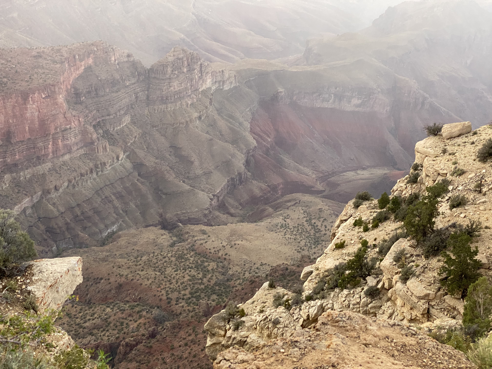

It's massive. I mean, really, pictures and words cannot desribe how big the Grand Canyon is. You have to really be there and see it to get the full scale. The Grand Canyon is a national park that is famous for how humongous it is. According to the National Park Service, the lowest part of the canyon is 1.6km deep, or about a mile! I visited the South Rim area of the Park, in which I got pictures and really saw the Canyon from a high point. I also took a helicopter tour of the canyon. Honestly, the view was amazing.
